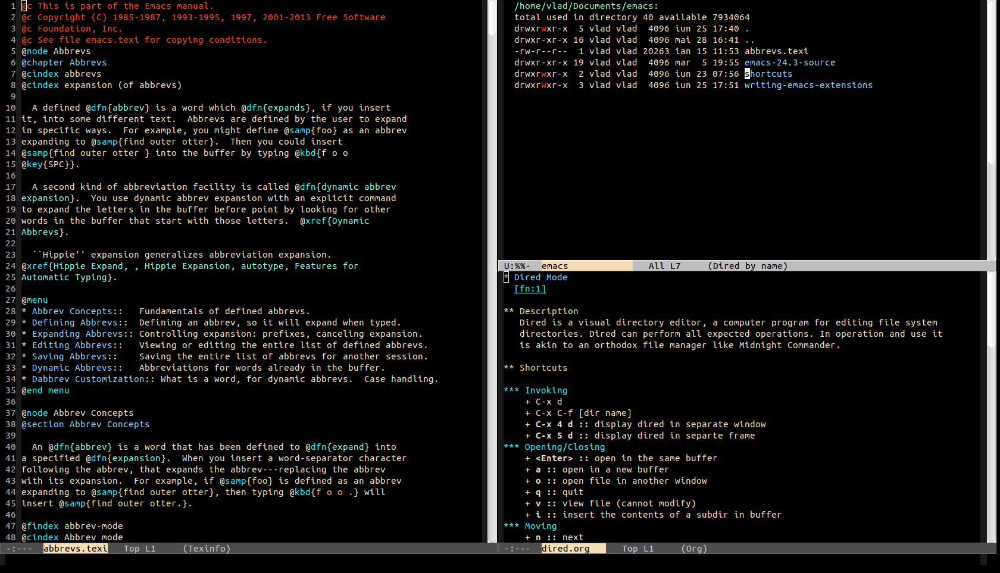

Emacs
Table of Contents
2. Notes
- leuven theme is nice for light mode (especially org-mode)
-

Figure 1: A Theme
3. Tips
3.1. Counsel Ripgrep
counsel-rg by default looks for a directory with .git and starts a search from there.
To limit the scope to current directory and its sub directories, not where .git is, use prefix argument before running counsel-rg then select which directory you want to run rg on.
3.2. EmacsClient for MacOS
Create an application applescript with the following code:
Based on: https://github.com/ferlatte/emacs-daemon-osx/blob/master/emacs-client.applescript
Changes
- Pass first parameter to emacsclient. So that we can open file from finder.
- " –eval '(select-frame-set-input-focus (selected-frame))'" to bring focus to new frame
- " > /dev/null 2>&1 &" : Applescript waits for emacsclient to end for the script to complete. This redirects stdout and stderr to /dev/null and run the process in background so that the script doesn't need to wait
< Collapse code block
-- Adapted From https://github.com/brianm/emacs-client-mac
--
on run argv
set arg to item 1 of argv
try
set filePath to POSIX path of arg
on error
set filePath to ""
end try
tell application "Terminal"
try
-- we look for <= 2 because Emacs --daemon seems to always
-- have an entry in visibile-frame-list even if there isn't
set frameVisible to do shell script "/Applications/Emacs.app/Contents/MacOS/bin/emacsclient -e '(<= 2 (length (visible-frame-list)))'"
if frameVisible is not "t" then
-- there is a not a visible frame, launch one
do shell script "/Applications/Emacs.app/Contents/MacOS/bin/emacsclient -c -n " & filePath & " --eval '(select-frame-set-input-focus (selected-frame))'" & " > /dev/null 2>&1 &"
else
do shell script "/Applications/Emacs.app/Contents/MacOS/bin/emacsclient -n " & filePath & " --eval '(select-frame-set-input-focus (selected-frame))'" & " > /dev/null 2>&1 &"
end if
on error
-- FIXME: instead, open an alertbox, since we intend to run Emacs
-- from launchd.
-- daemon is not running, start the daemon and open a frame
do shell script "/Applications/Emacs.app/Contents/MacOS/Emacs --daemon"
do shell script "/Applications/Emacs.app/Contents/MacOS/bin/emacsclient -c -n " & filePath & " --eval '(select-frame-set-input-focus (selected-frame))'" & " > /dev/null 2>&1 &"
end try
end tell
end run
3.3. Change face for some mode only
See example at org-config.el
< Collapse code block
;; a more noticable bold face for org mode in dark themes (spacemacs-dark) (face-remap-add-relative 'bold '(:weight bold :foreground "green3"))
4. Get image height/width in emacs
CREATED:
Open the dir of the image in dired. Keep the point on the file and
then run shell command M-! exiftool <file-name>
5. Bad Emacs Defaults
< Collapse code block
(setf sentence-end-double-space nil require-final-newline t) (add-hook programming-mode-hook (lambda () (setf show-trailing-whitespace t)))
5.1. backup-by-copying
https://news.ycombinator.com/item?id=37845995
Moving files to backup instead of copying is better. First, the file modification dates remain meaningful. When a backup is made, the backup file has a last modified date of when it was last changed and the new copy has the current time. It is also reversible if creating the new file fails for some reason. The backup file can moved back to the original location with a single file system operation and retains the right modification date.
It's also more robust in case of errors. Emacs can write new data to a temp file, confirm it succeeded then rename working to backup and new to working. You never have a situation where the working or backup file ends up half written.
5.2. sentence-end-double-space
This allows the editor to reliably differentiate between those periods (.) that are used in abbreviations and those that end sentences.